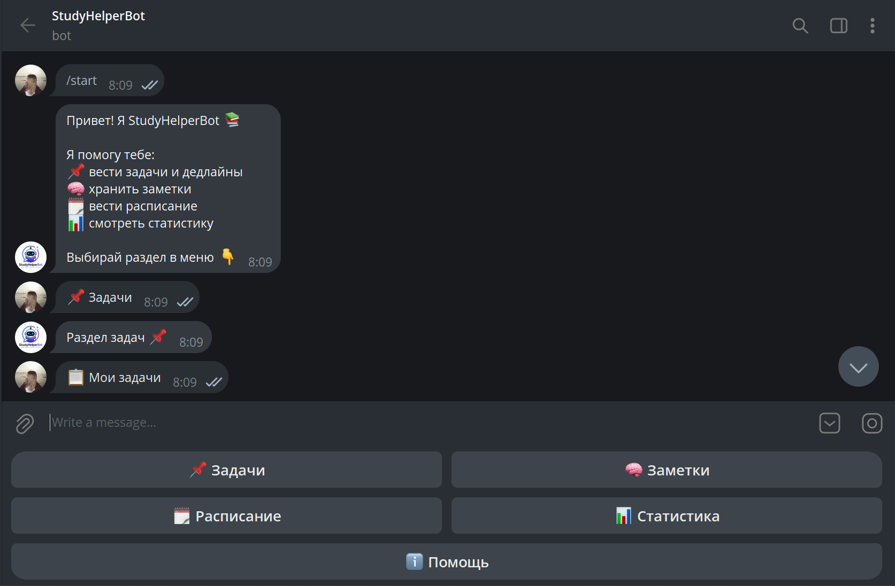

StudyHelperBot — Telegram-бот на Python, созданный для повышения личной продуктивности студентов.
Главная цель проекта — разработка Telegram-бота, который помогает студенту управлять учебной нагрузкой: фиксировать задания, сохранять заметки, хранить расписание и отслеживать прогресс выполнения задач.

Добавление задач с дедлайном, просмотр списка, удаление и отметка выполненных.
Создание заметок, хранение конспектов и быстрый поиск по тексту.
Добавление расписания пар по дням недели и просмотр списка.
Подсчёт выполненных задач и общий обзор продуктивности пользователя.
Бот реализован на Python с использованием библиотеки Aiogram 3. Данные хранятся в SQLite. Проект разделён на модули: конфигурация, база данных, клавиатуры и вспомогательные функции.
src/ ├── main.py # запуск и логика бота ├── db.py # работа с SQLite ├── config.py # токен и переменные окружения ├── keyboards.py # кнопки меню ├── utils.py # вспомогательные функции └── requirements.txt
Telegram является удобной платформой, потому что он всегда под рукой, поддерживает быстрый доступ к информации, уведомления и интерактивные кнопки. Бот не требует установки отдельного приложения и подходит для повседневного использования.